통합 (KS200+KQ150) 마켓온도
§0 · 종합 판단 (매크로 · 수급 · FOMC · 반전) · 마감 2026-10-29
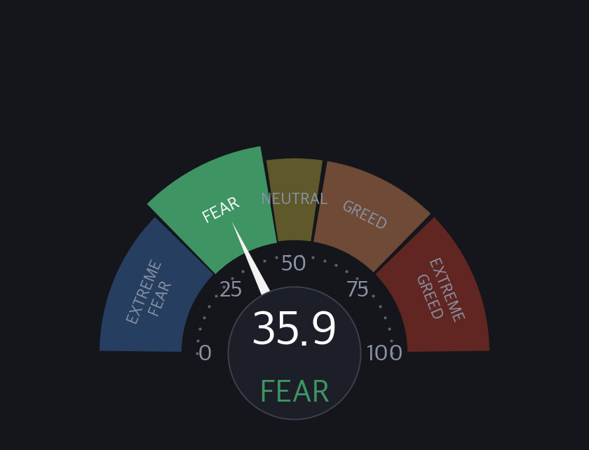

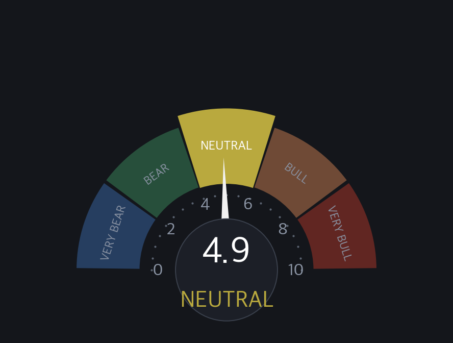
§W 위기 지표 종합 (KR 시장 공통 / 3개 페이지 같은 값 / 2026-10-29)
| No | 구분 | 지표 | 값 | 변화 | 단계 | 판정 | 기준일 |
|---|---|---|---|---|---|---|---|
| 1 | 국내 | VKOSPI (코스피200 변동성) | 51.85 | ▲ +1.0% | A 위기 | 극단 공포권 1봉 지연 / KRX 익일 제공 = 정상 | 2026-10-28 |
| 2 | 국내 | 코스피200 1년 고점 대비 낙폭 (KODEX 200) | -38.04% | ▼ -0.78pp | A 위기 | 심한 약세장 1년 고점 152,455 / 종가 94,465 | 2026-10-29 |
| 3 | 국내 | KR 마켓온도 (자체 / 통합 V2) | 34.94 | ▼ -1.0 | C 주의 | COOL | 2026-10-29 |
| 4 | 국내 | KR 시장폭 (통합 상승 비율) | 29.02% | – 직전 값을 싣지 않음 | B 경고 | VERY BEARISH | 2026-10-29 |
| 5 | 국내 | 지수 양극화 (자체 / 코스피200 vs 코스닥150) | 6.76 | – 직전 값을 싣지 않음 | D 정상 | 동조 우위 = 대형(코스피200) | 2026-10-29 |
| 6 | 국내 | F&G KR (자체 산출 / CNN 방식) | 26.75 | ▼ -0.06 | C 주의 | 공포 | 2026-10-29 |
| 7 | 국내 | 원/달러 | 1,341.98 | ▲ +1.30% | 등급 없음 | 1년 범위 위치 8% (1년저점권) | 2026-10-28 |
| 8 | 국내 | 국고채 10년 | 4.108% | ▲ +7.6bp | 등급 없음 | 1년 범위 위치 70% (중립권) | 2026-10-28 |
| 9 | 미국 | VIX | 16.91 | ▼ -3.5% | D 정상 | – | 2026-10-28 |
| 10 | 미국 | SKEW | 149.22 | ▼ -1.2% | C 주의 | 높음 | 2026-10-27 |
| 11 | 미국 | MOVE | 94.55 | ▼ -3.4% | D 정상 | – | 2026-10-28 |
| 12 | 미국 | HY OAS (업계) | 3.18% | ▼ -12bp | E 안일 | 좁음 확보 구간 백분위 12.8 / 위치 표기 (판정 아님) | 2026-10-27 |
| 13 | 미국 | HY OAS 1달 확대 속도 | +25bp | – | D 정상 | 보통 2026-09-25 대비 22봉 (평일 관측) | 2026-10-27 |
| 14 | 미국 | CCC−BB 질 분화 (하위 등급 스프레드 격차) | 11.34pp | ▼ -13bp | B 경고 | 크게 벌어짐 수준 11.34pp 벌어짐 / 1달 +182bp 확대 매우 빠름 (+150bp 이상) → 속도 기준 크게 벌어짐 / 2008-01-01 이후 백분위 93.4 = 위치 표기 | 2026-10-27 |
| 15 | 미국 | F&G (CNN) | 35.86 | ▲ +2.97 | C 주의 | 공포 | 2026-10-28 |
| 16 | 미국 | BofA Bull & Bear | 7.2 | ▼ -0.9 2주 전 대비 | D 정상 | 강세 | 2026-10-21 |
| 17 | 미국 | NixB&B (자체) | 4.92 | ▲ +0.35 | D 정상 | 중립 | 2026-10-28 |
| 18 | 미국 | S&P 500 1년 고점 대비 낙폭 (SPY) | -1.19% | ▲ +0.34pp | E 안일 | 고점 근처 1년 고점 781.62 / 종가 772.31 | 2026-10-28 |
| 19 | 미국 | NFCI (전미 금융여건지수) | -0.487 | ▲ +0.009 | 등급 없음 | 평균보다 루즈 | 2026-10-23 |
| 20 | 미국 | STLFSI4 (세인트루이스 금융스트레스지수) | -0.584 | ▲ +0.049 | 등급 없음 | 평균 이하 스트레스 | 2026-10-23 |
| 21 | 미국 | 장단기 금리차 (10년 − 3개월) | +1.05pp | ▲ +9.7bp | 등급 없음 | 비역전 | 2026-10-28 |
| 22 | 미국 | 美 10년 금리 | 5.045% | ▲ +5.2bp | 등급 없음 | 1년 범위 위치 77% (1년고점권) | 2026-10-28 |
| 23 | 미국 | 달러 지수 DXY | 102.13 | ▼ -0.19% | 등급 없음 | 1년 범위 위치 89% (1년고점권) | 2026-10-28 |
§1 · 온도 대시보드 (일 / 주 / 월)
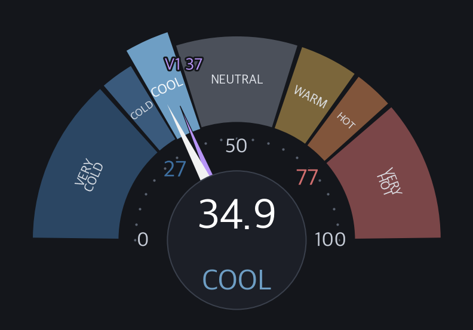
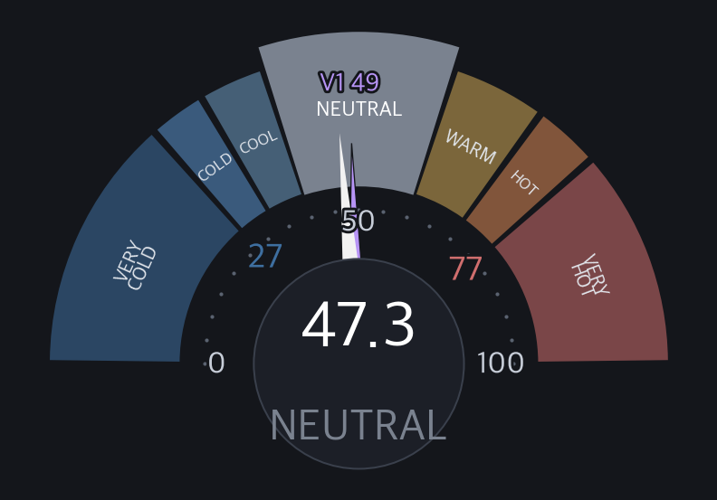
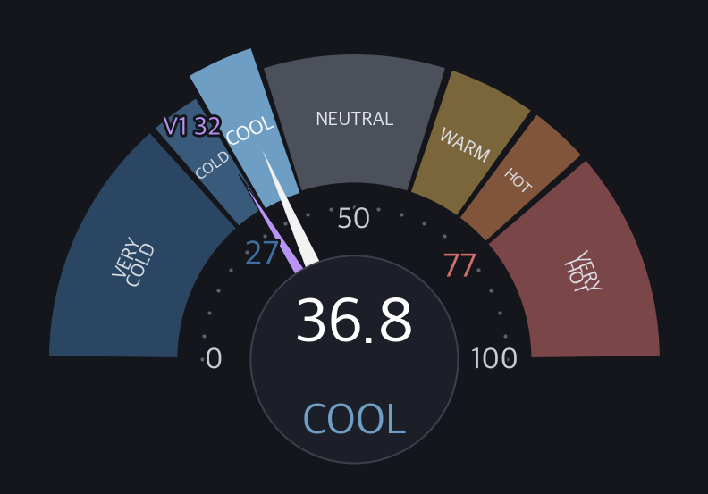
§1B · 온도·B&B 추이
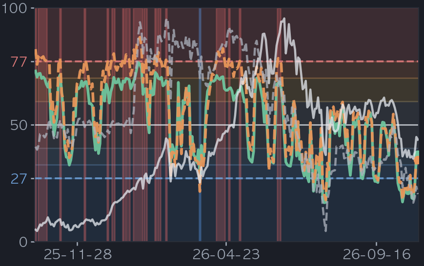
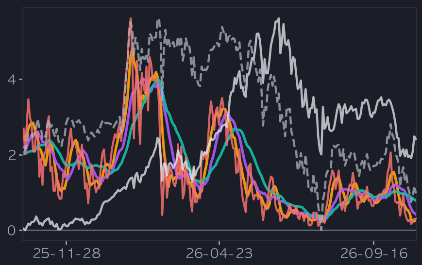
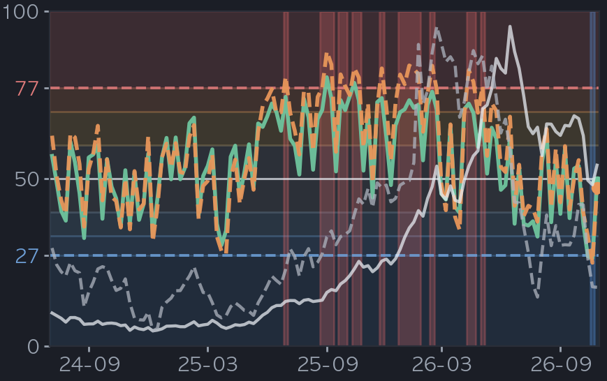
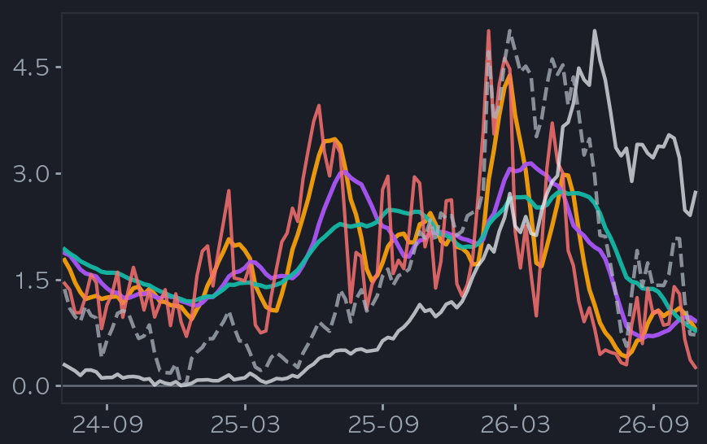
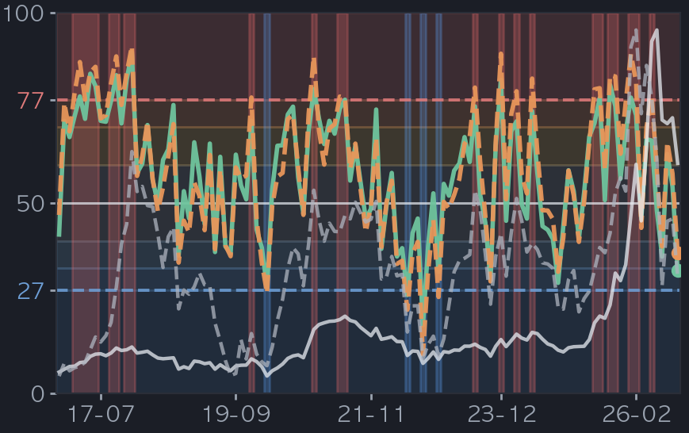
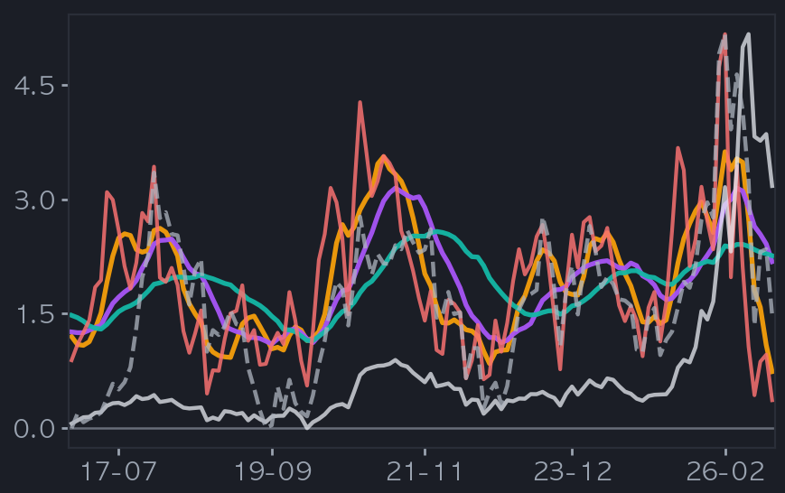
B&B 상세 — Count · Energy (일봉 · 옛 6패널 하단)
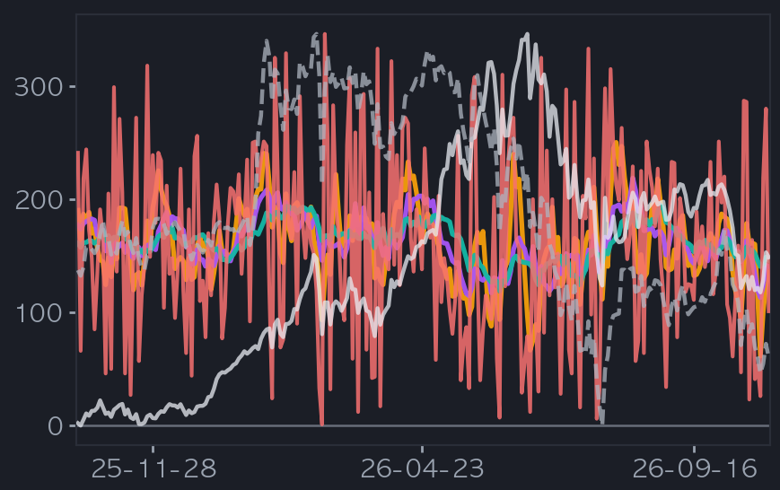
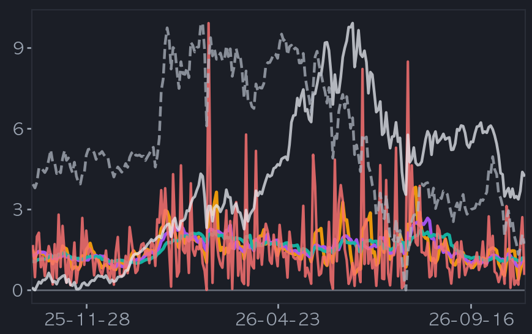
| 항목 | Bull(상승) 당일 | Bull MA22 | Bear(하락) 당일 | Bear MA22 |
|---|---|---|---|---|
| Count | 101 | 146.3 | -233 | -193.2 |
| Energy | 0.61 | 1.18 | -1.97 | -1.62 |
| Norm | 0.30 | 0.78 | -3.80 | -3.14 |
§2 · 지수 팬
§3 · 시장 폭 (구성종목)
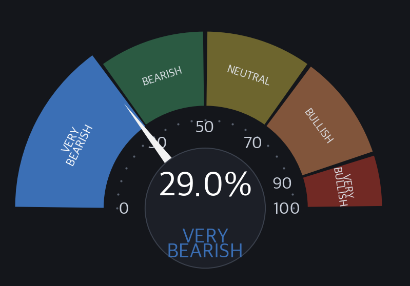
§V · 반전 · 검증 (통합 강건성)
§7 · 종합 판정
COOL V2 34.94℃ · V1 37.29℃ · 고점 거동 미확보.
온도 COOL(34.94) 저점 근접. 폭 29.02% VERY BEARISH. 고점 미armed.
과열은 타이밍 신호가 아님. 확률적 참고 — 투자권유(매수·매도·비중) 아님.
■ 읽는 법 (고점/저점 판단법)
온도 V1/V2: 가격 과열/과냉 0~100℃. 높을수록 뜨겁·후행. V2 낮을수록 저점권·높을수록 고점권.
팬(고점/저점): 방법론이 본 고점(위·빨강)/저점(아래·파랑) 목표. 1차=median(≈50% 도달)·×3=최대.
고점 지속 vs 조정 경계: 온도 고점 후 반응. 지속 = 매도 신호 아님(bull premium) / 조정 경계 = 고점 뒤 평균회귀(조정 위험).
스탠스(관점 우위): 매수 관점 우위 = 과냉권 → 저점 반등 여지 / 매도 관점 우위 (조정 경계) = 과열권 + 고점 지속 신호 없음 → 평균회귀 조정 위험 — 매도 쪽 관점이 우세하다는 뜻('매도를 경계하라' 아님 · 매도 권유 아님) / 관망 = 과열이나 고점 지속(bull premium) · 중립 · 고점 거동 미확보.
반전 edge: 과냉/과열 존 진입 후 전방수익이 baseline 대비 유의미한지(2010~). 승률·초과수익으로 검증.
전방 확률: 현재 온도존일 때 과거 h봉 뒤 상승 비율(50%=동전). 조건부 빈도이지 예측 아님. neff<20=소표본 → →값=2010~ base-rate 베이지안 축소(원값·축소 병기·신뢰보정, w=neff/(neff+20)).
수급 3주체: 외국인·기관·개인 순매수(억원). 빨강=순매수·파랑=순매도. 방향 주체 확인용.
마인드셋: 점쟁이 아니라 일기예보 — 방향보다 위험 크기. 확률이지 확정 아님.
■ 이 리포트 적용값 (수식 대입 · 실측)
| 등급 | 색 | 의미 |
|---|---|---|
| A 위기 | ■ 빨강 | 패닉 (위험) |
| B 경고 | ■ 주황 | 공포 또는 스트레스 구간 |
| C 주의 | ■ 금 | 평소보다 높음, 지켜볼 것 |
| D 정상 | ■ 초록 | 평소 수준 |
| E 안일 | ■ 파랑 | 너무 평온함 (방심 주의) |
| 판정 대상 아님 | ■ 회색 | 판정 조건 미충족 (등급 개수에 넣지 않음) |
| 등급 | 단계 | 구간 | 의미 | 오늘 |
|---|---|---|---|---|
| E 안일 | 저변동권 | 20 미만 | 변동성 낮음 (방심 주의) | |
| D 정상 | 안정권 | 20 이상 35 미만 | 평시 변동성 | |
| B 경고 | 경계권 | 35 이상 50 미만 | 불안 고조 (공포 구간) | |
| A 위기 | 극단 공포권 | 50 이상 | 극단 공포 (패닉) | ◀ 51.85 |
| 등급 | 단계 | 구간 | 의미 | 오늘 |
|---|---|---|---|---|
| A 위기 | 금융위기급 폭락 | 40% 이상 하락 | 시장 붕괴 수준 / 보유 자료 (2010-12 ~ 2025) 에 사례 없음 | |
| A 위기 | 심한 약세장 | 30% 이상 40% 미만 하락 | 깊어진 약세장 / 예 2020-03-19 -34.99% (코로나 급락) | ◀ -38.04% |
| B 경고 | 약세장 | 20% 이상 30% 미만 하락 | 업계가 말하는 약세장 / 예 2011-09-26 -28.53% (유럽 재정위기) | |
| C 주의 | 조정 | 10% 이상 20% 미만 하락 | 업계가 말하는 조정 / 예 2015-08-24 -19.88% (중국 위안화 충격) | |
| D 정상 | 눌림 | 3% 이상 10% 미만 하락 | 흔한 눌림 / 예 2017-08-11 -6.35% | |
| E 안일 | 고점 근처 | 3% 미만 하락 | 1년 고점 부근 (방심 주의) |
| 등급 | 단계 | 구간 | 의미 | 오늘 |
|---|---|---|---|---|
| A 위기 | VERY COLD | 27 미만 | 과냉 = 위험 회피 극단 | |
| B 경고 | COLD | 27 이상 33 미만 | 한랭 = 위험 회피 강함 | |
| C 주의 | COOL | 33 이상 40 미만 | 냉각 = 위험 회피 우위 | ◀ 34.94 |
| D 정상 | NEUTRAL | 40 이상 60 미만 | 중립 = 평소 수준 | |
| D 정상 | WARM | 60 이상 70 미만 | 온난 = 위험 선호 우위 | |
| E 안일 (과열) | HOT | 70 이상 77 미만 | 과열 = 위험 선호 강함 (방심 주의) | |
| E 안일 (과열) | VERY HOT | 77 이상 | 극과열 = 위험 선호 극단 (방심 주의) |
| 등급 | 단계 | 구간 | 의미 | 오늘 |
|---|---|---|---|---|
| B 경고 | VERY BEARISH | 30% 미만 | 약세 종목 쏠림 극단 | ◀ 29.02% |
| C 주의 | BEARISH | 30% 이상 50% 미만 | 약세 종목 우위 | |
| D 정상 | NEUTRAL | 50% 이상 70% 미만 | 강약 균형 | |
| D 정상 | BULLISH | 70% 이상 90% 미만 | 강세 종목 우위 | |
| E 안일 (과열) | VERY BULLISH | 90% 이상 | 강세 종목 쏠림 극단 (방심 주의) |
| 등급 | 단계 | 구간 | 의미 | 오늘 |
|---|---|---|---|---|
| D 정상 | 동조 | 8 미만 | 두 지수 같은 흐름 | ◀ 6.76 |
| D 정상 | 경미 | 8 이상 16 미만 | 약한 차이 | |
| C 주의 | 부분 양극화 | 16 이상 26 미만 | 뚜렷한 차이 (차별화 장세) | |
| B 경고 | 심한 양극화 | 26 이상 | 극단 차이 (쏠림 장세) |
| 등급 | 단계 | 구간 | 의미 | 오늘 |
|---|---|---|---|---|
| B 경고 | 극단적 공포 | 25 미만 | 공포 극단 (투매 심리) | |
| C 주의 | 공포 | 25 이상 45 미만 | 공포 우위 | ◀ 26.75 |
| D 정상 | 중립 | 45 이상 55 미만 | 공포와 탐욕 균형 | |
| D 정상 | 탐욕 | 55 이상 75 미만 | 탐욕 우위 | |
| E 안일 (과열) | 극단적 탐욕 | 75 이상 | 탐욕 극단 (방심 주의) |
| 등급 | 단계 | 구간 | 의미 | 오늘 |
|---|---|---|---|---|
| E 안일 | 안일 | 12 미만 | 낮은 공포 = 안일 (과열 쪽 / 역발상 주의) | |
| D 정상 | 정상 | 12 이상 20 미만 | 평균 수준 변동성 (로컬 2008~ 중앙값 17.4 / 평균 19.9) | ◀ 16.91 |
| C 주의 | 주의 | 20 이상 30 미만 | 불안 고조 (평균 위) | |
| B 경고 | 경고 | 30 이상 40 미만 | 공포 구간 (여러 해설서 공통 공포선 30) | |
| A 위기 | 위기 | 40 이상 | 패닉 (2008 종가 최고 80.9 / 장중 89.5 / 2020 종가 최고 82.7) |
| 등급 | 단계 | 구간 | 의미 | 오늘 |
|---|---|---|---|---|
| E 안일 | 낮음 | 124 미만 | 꼬리 헤지 수요 적음 | |
| D 정상 | 보통 | 124 이상 146 미만 | 평소 수준 꼬리 헤지 (2016~ 중앙값 135.7) | |
| C 주의 | 높음 | 146 이상 156 미만 | 꼬리 헤지 수요 큼 (2016~ 상위 20% 안쪽) | ◀ 149.22 |
| C 주의 | 매우 높음 | 156 이상 | 꼬리 헤지 수요 매우 큼 (하락 예측력은 약함) |
| 등급 | 단계 | 구간 | 의미 | 오늘 |
|---|---|---|---|---|
| E 안일 | 안정 | 80 미만 | 채권시장 평온 (80 미만 / 로컬 2008~ 중앙값 79.0) | |
| D 정상 | 정상 | 80 이상 100 미만 | 평균 수준 (로컬 2008~ 평균 86.3) | ◀ 94.55 |
| C 주의 | 주의 | 100 이상 120 미만 | 채권 변동성 높음 | |
| B 경고 | 경고 | 120 이상 150 미만 | 채권시장 스트레스 | |
| A 위기 | 위험 지속 | 150 이상 | 지수 창시자: 150 위 = 위험 지속 (2008 종가 최고 264.6 / 2023-03 장중 최고 198.7) |
| 등급 | 단계 | 구간 | 의미 | 오늘 |
|---|---|---|---|---|
| E 안일 | 매우 좁음 | 3% 미만 | 역사적 타이트 = 신용 위험 가격 매우 낮음 (안일) | |
| E 안일 | 좁음 | 3% 이상 4% 미만 | 타이트 = 장기 평균 5.25% 보다 낮음 (안일 쪽) | ◀ 3.18% |
| D 정상 | 보통 | 4% 이상 5.5% 미만 | 장기 평균권 (평균 525bp) | |
| C 주의 | 주의 | 5.5% 이상 6.5% 미만 | 평균 위 = 스프레드 확대 (침체선 800bp 아래) | |
| B 경고 | 경고 | 6.5% 이상 8% 미만 | 신용 스트레스 (평균 5.25 와 침체선 8.0 의 중간 위) | |
| A 위기 | 위기 | 8% 이상 10% 미만 | 침체 기준선 800bp 위 | |
| A 위기 | 극단 | 10% 이상 | 1,000bp 위 = 1990-91 / 2001 / 2008-09 / 2020 침체에서 돌파 (2008 고점 2,147bp) |
| 등급 | 단계 | 구간 | 의미 | 오늘 |
|---|---|---|---|---|
| D 정상 | 보통 | +50bp 미만 | 1달 확대가 평소 범위 (축소 포함) | ◀ +25bp |
| C 주의 | 확대 빠름 | +50bp 이상 +100bp 미만 | 위험 재가격 시작 (HY 수준이 낮을수록 의미가 큼) | |
| B 경고 | 확대 매우 빠름 | +100bp 이상 | 빠른 신용 스트레스 (근거 약함 / 상태 표시) |
| 등급 | 단계 | 구간 | 의미 | 오늘 |
|---|---|---|---|---|
| E 안일 | 압축 | 수준 4.7pp 미만 (1달 +100bp 미만) | 수준이 사이클 저점 쪽이고 1달 확대도 평소 범위 (방심 주의) | |
| D 정상 | 보통 | 수준 4.7pp 이상 8pp 미만 (1달 +100bp 미만) | 수준과 1달 변화 모두 평소 범위 | |
| C 주의 | 벌어짐 | 수준 8pp 이상 15pp 미만 / 또는 1달 +100bp 이상 +150bp 미만 | 수준이 벌어졌거나 1달 확대가 빠름 (상태 표시) | |
| B 경고 | 크게 벌어짐 | 수준 15pp 이상 / 또는 1달 +150bp 이상 | 수준이 크게 벌어졌거나 1달 확대가 매우 빠름 (근거는 2008 금융위기와 2020 코로나 급락에 기댐) | ◀ 11.34pp |
| 등급 | 단계 | 구간 | 의미 | 오늘 |
|---|---|---|---|---|
| B 경고 | 극단적 공포 | 25 미만 | 공포 극단 (투매 심리) | |
| C 주의 | 공포 | 25 이상 45 미만 | 공포 우위 | ◀ 35.86 |
| D 정상 | 중립 | 45 이상 55 미만 | 공포와 탐욕 균형 | |
| D 정상 | 탐욕 | 55 이상 75 미만 | 탐욕 우위 | |
| E 안일 (과열) | 극단적 탐욕 | 75 이상 | 탐욕 극단 (방심 주의) |
| 등급 | 단계 | 구간 | 의미 | 오늘 |
|---|---|---|---|---|
| B 경고 | 극단 약세 (매수권) | 2 미만 | 심리 극단 약세 | |
| C 주의 | 약세 | 2 이상 4 미만 | 약세 심리 | |
| D 정상 | 중립 | 4 이상 6 미만 | 중립 심리 | |
| D 정상 | 강세 | 6 이상 8 이하 | 강세 심리 | ◀ 7.2 |
| E 안일 (과열) | 극단 강세 (매도권) | 8 초과 | 심리 극단 강세 = 과열 (방심 주의) |
| 등급 | 단계 | 구간 | 의미 | 오늘 |
|---|---|---|---|---|
| B 경고 | 극단 약세 (매수권) | 2 이하 | 심리 극단 약세 | |
| C 주의 | 약세 | 2 초과 4 미만 | 약세 심리 | |
| D 정상 | 중립 | 4 이상 6 미만 | 중립 심리 | ◀ 4.92 |
| D 정상 | 강세 | 6 이상 8 미만 | 강세 심리 | |
| E 안일 (과열) | 극단 강세 (매도권) | 8 이상 | 심리 극단 강세 = 과열 (방심 주의) |
| 등급 | 단계 | 구간 | 의미 | 오늘 |
|---|---|---|---|---|
| A 위기 | 금융위기급 폭락 | 40% 이상 하락 | 시장 붕괴 수준 / 예 2009-03-09 -52.80% (금융위기) | |
| A 위기 | 심한 약세장 | 30% 이상 40% 미만 하락 | 깊어진 약세장 / 예 2020-03-23 -34.25% (코로나 급락) | |
| B 경고 | 약세장 | 20% 이상 30% 미만 하락 | 업계가 말하는 약세장 / 예 2022-10-12 -25.71% (금리 인상기) | |
| C 주의 | 조정 | 10% 이상 20% 미만 하락 | 업계가 말하는 조정 / 예 2025-04-08 -19.04% (관세 충격) | |
| D 정상 | 눌림 | 3% 이상 10% 미만 하락 | 흔한 눌림 / 예 2024-08-05 -8.45% | |
| E 안일 | 고점 근처 | 3% 미만 하락 | 1년 고점 부근 (방심 주의) | ◀ -1.19% |
| 구간 | 상태 | 의미 | 오늘 |
|---|---|---|---|
| 0 미만 | 평균보다 루즈 | 금융여건이 장기 평균보다 느슨함 | ◀ -0.487 |
| 0 | 역사 평균(0) | 장기 평균과 같음 | |
| 0 초과 | 평균보다 타이트 | 금융여건이 장기 평균보다 빡빡함 |
| 구간 | 상태 | 의미 | 오늘 |
|---|---|---|---|
| 0 미만 | 평균 이하 스트레스 | 금융 스트레스가 평균보다 낮음 | ◀ -0.584 |
| 0 | 정상(0) | 평균 수준 스트레스 (발행기관 규약의 0 / 등급 D 정상과는 다른 말) | |
| 0 초과 | 평균 이상 스트레스 | 금융 스트레스가 평균보다 높음 |
| 구간 | 상태 | 의미 | 오늘 |
|---|---|---|---|
| 0pp 미만 | 역전 | 장기 금리가 단기보다 낮음 (침체 선행으로 연구된 모양) | |
| 0pp | 같음 (0) | 장기와 단기 금리가 같음 | |
| 0pp 초과 | 비역전 | 장기 금리가 단기보다 높음 (보통 모양) | ◀ +1.05pp |
| 1년 범위 위치 | 상태 | 의미 | 오늘 |
|---|---|---|---|
| 25% 미만 | 1년저점권 | 1년 가격 범위의 아래쪽 4분의 1 (0% = 1년 저점) | ◀ 원/달러 8% |
| 25% 이상 75% 이하 | 중립권 | 1년 가격 범위의 가운데 절반 | ◀ 국고채 10년 70% |
| 75% 초과 | 1년고점권 | 1년 가격 범위의 위쪽 4분의 1 (100% = 1년 고점) | ◀ 美 10년 금리 77% ◀ 달러 지수 DXY 89% |
§G 읽는 법 (용어, 수식, 레퍼런스 = 공통 SSOT copy / 사용한 항목만)
◆ 용어정의
| 용어 | 정의 | 의미 | 구분 |
|---|---|---|---|
| 단위 읽는 법 (% / pp / 점수 차이) | % = 비율, 변화율(나눗셈: 오늘 ÷ 어제 − 1, 예 +1.20%). pp = 백분율끼리의 차이(뺄셈: 적중 92% − 기저 51% = +41pp). 점수 차이 = 0~100 점수(온도, F&G 등)끼리의 차이는 단위 없이 숫자만(예: 고점선 77 까지 +3.2). '%p', 'p' 를 붙이지 않는다. | % 는 얼마나 '비율로' 변했나, pp 는 퍼센트끼리 '뺀' 차이, 온도처럼 점수끼리의 차이는 그냥 숫자. | 자체 |
| V1 / V2 | V1=6팩터(US)/10팩터(KR), V2=9팩터(US)/11팩터(KR)(등급 기준). 자체 지표, 산식은 비공개(값, 등급, 검증만 공개). | 온도를 재는 두 버전. V2가 등급 판정 기준. | 자체 |
| 통합 vs 지수별 | 통합 = KOSPI200+KOSDAQ150 종합 관점(헤드라인은 종합 6팩터). 지수별 = KOSPI200, KOSDAQ150 각각의 V2, 팬, 반전(★고점/저점 판정은 지수별 세트가 본체). | 전체 한 장 요약(통합) 과 지수 하나씩 본 것(지수별) 은 쓰임이 다름. | 자체 |
| 온도 존 7단 | VERY COLD<27 / COLD 27~33 / COOL 33~40 / NEUTRAL 40~60 / WARM 60~70 / HOT 70~77 / VERY HOT≥77 | 온도를 7구간으로 나눈 이름표. COLD=싸짐, HOT=비쌈. | 자체 |
| armed | 반전 신호 켜짐(트리거 조건 도달). 미armed=대기. | 반전 신호가 켜졌나(켜짐=armed). | 자체 |
| M1 고정존 | 반전 방법①. 27/77 고정 문턱으로 과냉, 과열을 판정. | 정해진 눈금(27·77)을 넘으면 반전 후보로 보는 방법. | 자체 |
| M2 동적존 | 반전 방법②. ZigZag 스윙 고, 저점에서 역산한 동적 문턱(표본 외 OOS 검증). | 과거 실제 꼭지, 바닥에서 거꾸로 계산한 눈금을 쓰는 방법. | 자체 |
| bull premium | 온도 고점 후에도 상승이 이어지는 거동 = 고점이 매도 신호가 아님. | 뜨거워도 더 오르던 장. 고점=팔 때가 아니라는 뜻. | 자체 |
| 조정 경계 | 온도 고점 후 평균회귀(하락)가 우세한 고점 거동(sell_signal). 고점 지속(bull premium) 신호가 없어 조정 위험이 큰 상태. | 뜨거워진 뒤 되돌아온 경우가 더 많았던 장. 고점에서 조정(하락)을 조심하라는 뜻. | 자체 |
| 관점 우위(스탠스) | 온도존과 고점 거동으로 정한 확률적 관점. 매수 관점 우위 = 과냉권(VERY COLD, COLD, COOL) → 저점 반등 여지. 매도 관점 우위 (조정 경계) = 과열권(WARM, HOT, VERY HOT) + 고점 지속 신호 없음 → 평균회귀 조정 위험. 관망 = 과열이나 고점 지속(bull premium), 중립, 고점 거동 미확보. 매수, 매도 권유가 아님. | 지금 온도에서 과거에 어느 쪽(반등 / 조정)이 더 많았는지로 본 관점. '매도 관점 우위' 는 매도를 경계하라는 뜻이 아니라 조정 쪽 위험이 더 크다는 뜻. | 자체 |
| 팬(1~3차) | 1차=median(≈50% 도달), 3차=최대 폭. 고점, 저점 %거리 차이는 방향 신호 아님. | 현재가에서 위/아래로 얼마나 갈 수 있는지 3단계 목표. | 자체 |
| macroATR(22/54) | 전용 매크로 변동성. 22봉(1달), 54봉(분기) 집계 고, 저, 종가의 ATR. 지평 규모를 반영. | 그 기간에 시장이 보통 얼마나 흔들렸는지의 폭. | 외부 |
| ret | 해당 구간 끝 시점의 평균 수익률(%). | 그 구간이 끝났을 때 평균 몇 % 였나. | 외부 |
| dd | 해당 구간 보유 중 최저점까지의 평균 낙폭(MDD, %). ret 과 순서가 아니라 같은 구간의 두 측정. | 그 구간 중 가장 많이 빠졌을 때의 폭. | 외부 |
| n(표본수) | 검증에 쓴 신호 발화 횟수. n<30(또는 20)=소표본⚠️ 신뢰 하향. | 몇 번 검증했나. 적으면 우연일 수 있음. | 외부 |
| neff(유효 표본, 겹침 보정) | 겹치는 창(overlapping window)의 자기상관을 보정한 유효 표본 수. neff<20 = 소표본(⚠︎). | 겹쳐 센 표본을 걷어낸 실제 표본 수. 적으면 우연일 수 있음. | 외부 |
| 95% CI | 블록 부트스트랩으로 만든 신뢰구간. 넓을수록 불확실. | 참값이 들어있을 만한 범위. 넓으면 그만큼 덜 확실. | 외부 |
| 기저(base) | 조건 없이 전 구간에서 오른 비율(%). edge 를 재는 기준선. | 아무 신호 없이 그냥 샀을 때 오를 확률. | — |
| edge(pp) | 신호 적중률 − 무조건 기저 적중률(pp). 기간(horizon)은 표시처별 — 반전 확률 42거래일 / 그 밖(에지 DB, 온도 반전 등)은 소스의 h 표기(h5/h12/h22/h54…). +면 무작위보다 우위. | 이 신호가 그냥 찍는 것보다 얼마나 더 맞나(pp). 클수록 강함 / 기간은 표시처 표기를 따름. | 자체 |
| hit(적중률) | 신호 발화 후 예측 방향으로 간 비율(%). 50%=동전. | 신호가 맞은 비율. | 외부 |
| verified(검증됨) | 백테스트에서 edge>0, CI 통과한 방법. CI 미통과, edge 없음=방향 참고만. | 과거 데이터로 실제 맞는지 확인된 신호. | 자체 |
| 신뢰 c | 방향 판정의 통계적 확신도(0~100). 표본이 적거나 50:50 에 가까울수록 낮음. | 그 방향 판단을 얼마나 믿어도 되는지(0~100). | 자체 |
| O / △ / X | 과거 검출 결과. O=성공 / △=진행 중 / X=실패. | 지난 신호가 맞았나(O), 아직 진행중(△), 틀렸나(X). | 자체 |
| 시장폭(폭) | 그날 오른 종목 비율(%). 등급 90 이상 VERY BULLISH, 70 이상 BULLISH, 50 이상 NEUTRAL, 30 이상 BEARISH, 30 미만 VERY BEARISH. 낮으면 소수 주도(좁은 강세). | 오른 종목이 전체의 몇 %인가. 낮으면 몇 종목만 올리는 좁은 장. | 외부 |
| 수급 3주체 | 외국인, 기관, 개인 순매수(억원)=매수대금−매도대금(확정 기준 시각 전 수집 = 잠정 / 이후 수집 = 확정). 양수=순매수, 음수=순매도. 방향 플립=최우선 관찰. | 누가 샀고 누가 팔았나. 외국인, 기관, 개인 세 주체. | 외부 |
| 매크로 스트립 | VIX, MOVE, SKEW, 금리, 환율(KRW), 크레딧 등 외부 환경 지표. 온도의 배경 조건. | 시장 바깥 환경(변동성, 금리, 환율) 한 줄 요약. | 외부 |
| horizon h | 앞으로 h 거래일 뒤를 본다는 뜻. h5≈1주 / h12≈2~3주 / h22≈1달 / h54≈2.5달. | 며칠 뒤를 보고 재는지. | — |
| KR 색 관례 | 빨강 = 상승/순매수 / 파랑 = 하락/순매도 (미국 관례와 반대). | 한국은 빨강이 오름, 파랑이 내림 — 미국과 반대. | 외부 |
| 온도 5년 백분위 | 마켓온도(V1, V2 각각)의 현재 값이 최근 5년 창(1년 창 × 5 = 일봉 1225봉, 주봉 270봉, 월봉 60봉) 안에서 차지한 순위(0~100). 창 안 값 중 현재 값 이하인 개수 ÷ 창 봉 수 × 100 이며 현재 봉을 포함한다. 나라와 지수마다 온도의 장기 평균과 편차가 달라 절대값(℃)끼리는 같은 눈금이 아니므로, 각자 자기 이력 안의 위치로 견준다. 창이 다 차지 않았거나 창 안에 결측 또는 워밍업 구간이 있으면 값을 내지 않는다(—). 1년 롤링 백분위(과거 1년 중 현재보다 낮은 비율, 현재 제외)와는 창과 셈법이 다른 별개 값이다. | 지금 온도가 자기 지난 5년 중 어디쯤인가를 0~100으로. 80 이면 지난 5년의 80% 가 지금 이하(뜨거운 쪽), 20 이면 차가운 쪽. | 외부 |
| 온도 5년 z | 마켓온도(V1, V2 각각)의 현재 값이 최근 5년 창 평균에서 표준편차 몇 배 떨어져 있는지. 창과 빈 값 규칙은 온도 5년 백분위와 같고, 표준편차는 표본표준편차이며 창 안 값이 모두 같으면 0 이다. + 는 평균보다 뜨거운 쪽, − 는 차가운 쪽이다. 백분위가 0 이나 100 끝에 붙어도 z 는 얼마나 멀리 벗어났는지를 계속 구분한다. 온도 분포는 정규분포가 아니어서 z 를 확률로 바꿔 읽지 않는다(확률 자리는 5년 백분위). 같은 날 여러 섹터를 견주는 횡단면 z-score 와 달리 자기 이력 대비 위치다. | 지금 온도가 자기 지난 5년 평균보다 표준편차 몇 칸 위나 아래인가. +1 이면 평균보다 한 칸 위, −1 이면 한 칸 아래. | 외부 |
◆ 수식설명 (외부 공식만 공개 / 🔒자작 수식, 로직 비공개)
| 이름 | 식 | 설명 |
|---|---|---|
| 온도 V1 / V2 | 🔒 자체 알고리즘 / 학습방법, 산식, 가중 비공개 (이름, 값, 임계, 등급, 검증 결과 공개) | |
| 온도 존 | 🔒 자체 알고리즘 / 학습방법, 산식, 가중 비공개 (이름, 값, 임계, 등급, 검증 결과 공개) | |
| 팬(목표 레벨) | 🔒 자체 알고리즘 / 학습방법, 산식, 가중 비공개 (이름, 값, 임계, 등급, 검증 결과 공개) | |
| macroATR(N, p) | talib.ATR(N봉 집계 고, 저, 종가, timeperiod = p) — 1달 N=22, p=5 / 분기 N=54, p=12 | 지평 규모 반영 전용 매크로 변동성 |
| 시장폭 | 당일 상승 종목수 ÷ 전체 × 100 | 등급 경계 90/70/50/30 5단 |
| 수급 | 순매수 = 매수대금 − 매도대금 (억원; 확정 기준 시각 전 수집 = 잠정, 이후 = 확정) | 양수=순매수, 음수=순매도 |
| 전방 수익률 r_fwd | (종가[t+h] − 종가[t]) ÷ 종가[t] | h = horizon(거래일) |
| 낙폭 dd (MDD) | dd = min( (P[t+k] − P[t]) ÷ P[t] ), k = 1..h (구간 보유 중 최저점까지) | ret 과 같은 구간의 다른 측정 |
| 95% 신뢰구간 | 블록(정상) 부트스트랩 B = 2000 회 재표본 → 2.5 / 97.5 백분위 | Politis & Romano (1994) / Efron & Tibshirani (1993) percentile |
| neff (겹침 보정) | neff = N ÷ (1 + 2×Σρ) (ρ = 겹치는 창의 자기상관) | neff < 20 = 소표본 |
| edge | 🔒 자체 알고리즘 / 학습방법, 산식, 가중 비공개 (이름, 값, 임계, 등급, 검증 결과 공개) | |
| 적중률 hit | mean(r_fwd > 0) × 100 (신호 점등 표본만) | 50%=동전 |
| 기저 상승확률 base | mean(r_fwd > 0) × 100 (조건 없는 전 구간) | edge 의 기준선 |
| 온도 5년 백분위 | W = 1년 창 × 5 (일 245 × 5 = 1225봉, 주 54 × 5 = 270봉, 월 12 × 5 = 60봉); 백분위 = (최근 W봉 중 현재값 이하 개수 ÷ W) × 100; 창 미달, 창 안 결측, 워밍업 포함 = 미산출 | 현재 봉 포함, 이후 봉 미사용(look-ahead 없음). V1, V2 각각, 지수마다 따로 계산. 1년 롤링 백분위(과거 1년 중 현재보다 낮은 비율, 현재 제외)와 다른 정의 |
| 온도 5년 z | z = (X − μ) ÷ σ; μ, σ = 최근 W봉(온도 5년 백분위와 같은 창)의 평균, 표본표준편차(ddof=1); σ = 0 이면 z = 0; 창 미달, 창 안 결측, 워밍업 포함 = 미산출 | 시계열 z(자기 이력 대비). 같은 날 동료 대비인 횡단면 z-score 와 다른 물건. 분포가 정규가 아니므로 확률 환산 금지 |
◆ 레퍼런스
| 자료 | 설명 / 링크 |
|---|---|
| 내부 / 표준 | nix_report_master_procedure.md §0b — 전 리포트 3요소 표준(결론 먼저, 풀어 쓴 인과, 마지막 용어/수식/레퍼런스) |
| 내부 / 지표 읽는 법 | nix_5gauge_reading_guide.md — 온도 V1/V2 / F&G / NixB&B / BofA 5종 읽는 법 |
| 내부 / KR 온도 데이터 규약 | nix_kr_market_temp_data_directive.md — KR 전용 온도 스냅샷 규약 |
| 내부 / 존 7단 밴드 SSOT | src/stock/indicators_calculate/macro/temp_grade_bands.py — 7단 고정 밴드 정본 |
| 수급(확정 기준 시각 이후 = 확정), 지수 | KRX 정보데이터시스템 / http://data.krx.co.kr |
| 외부 / 거시 통계 | 한국은행 ECOS / https://ecos.bok.or.kr |
| 외부 / ATR 원저 | Average True Range — J. Welles Wilder Jr., New Concepts in Technical Trading Systems (1978) / https://en.wikipedia.org/wiki/Average_true_range |
| 지표 구현 | TA-Lib 함수 목록 / https://ta-lib.org/functions/ |
| 외부 / MDD 정의 | Maximum Drawdown (Drawdown, economics) / https://en.wikipedia.org/wiki/Drawdown_(economics) |
| 외부 / 부트스트랩 원저 | Politis & Romano (1994) The Stationary Bootstrap, JASA 89:1303 / https://doi.org/10.1080/01621459.1994.10476870 |
| 문헌 / 링크 없음 | Politis & White (2004) Automatic block-length selection / Efron & Tibshirani (1993) percentile CI / Magdon-Ismail & Atiya (2004) Maximum Drawdown |
| 가격 데이터 | Yahoo Finance |
| 확률 시장 | Polymarket (FOMC 등 이벤트 베팅) / https://polymarket.com |
| 자체 검증 | NixStock 추이, 반전 백테스트 (본문에 n, 적중, edge 그대로 표기) / 자작 알고리즘 비공개 |
| 외부 / 백분위, 표준점수 | 백분위 순위(percentile rank, 현재값 이하 비율)와 표준점수(z-score, 평균 대비 표본표준편차 배수) — 시계열 자기 이력 위치를 재는 표준 통계량 |